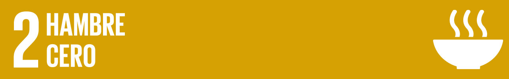

¿Qué es el Hambre Cero?
El Objetivo de Desarrollo Sostenible 2 (ODS 2) busca erradicar el hambre y garantizar que todas las personas, especialmente las más vulnerables, tengan acceso a alimentos suficientes, seguros y nutritivos durante todo el año.

Retos del Hambre Cero
- Más de 800 millones de personas en el mundo padecen hambre, lo que equivale al 10% de la población mundial.
- La desnutrición infantil sigue siendo una problemática crítica.
- El cambio climático y los conflictos afectan la disponibilidad de alimentos.
Metas del ODS 2
- Acabar con el hambre y la desnutrición.
- Fomentar prácticas agrícolas sostenibles.
- Asegurar el acceso a recursos como semillas, tecnología y tierra para pequeños productores.
- Promover cadenas de suministro alimentario resilientes.
¿Cómo contribuir al ODS 2?
Todos podemos ayudar a reducir el hambre adoptando prácticas responsables como: reducir el desperdicio de alimentos, apoyar a productores locales y consumir productos de temporada.
